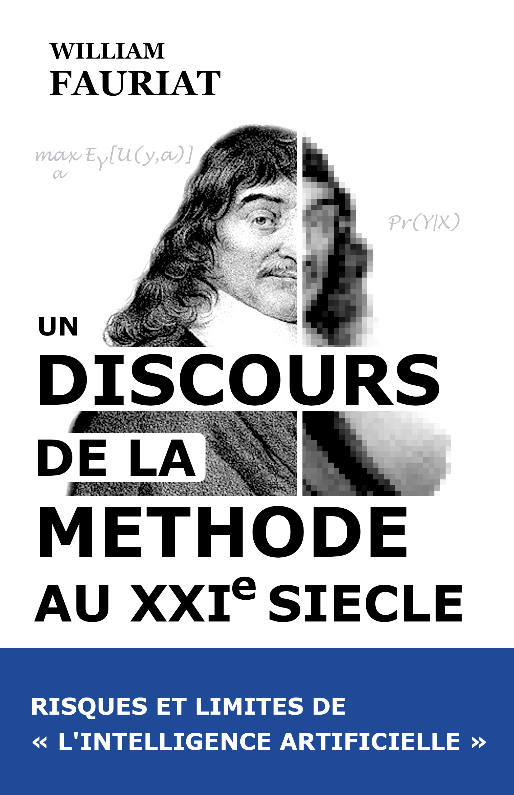
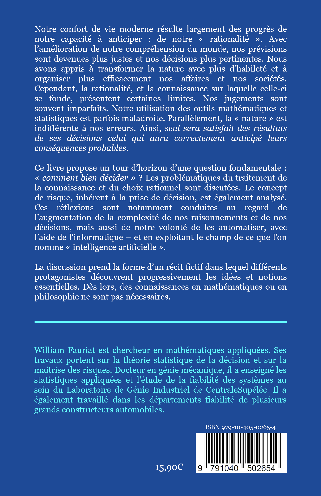
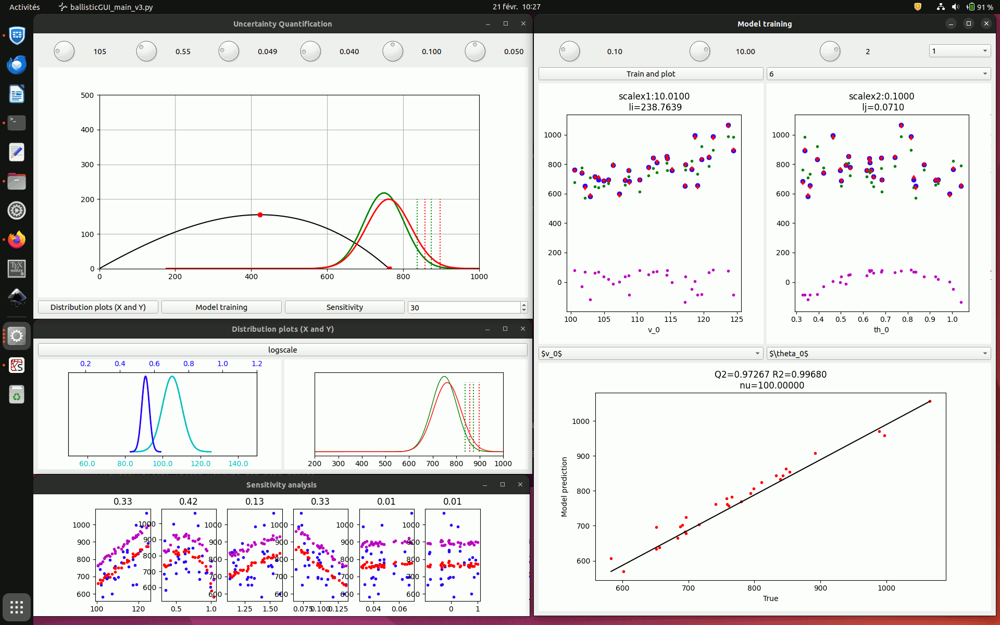

Notre confort de vie moderne résulte largement des progrès
de notre capacité à anticiper : de notre « rationalité ».
Avec l’amélioration de notre compréhension du monde,
nos prévisions sont devenues plus justes et nos décisions plus pertinentes.
Nous avons appris à transformer la nature avec plus d’habileté et à organiser
plus efficacement nos sociétés.
Cependant, la rationalité, et la connaissance sur laquelle celle-ci
se fonde, présentent certaines limites. Nos jugements sont souvent imparfaits.
Notre utilisation des outils mathématiques et statistiques est parfois
maladroite. Parallèlement, la « nature » est indifférente à nos erreurs.
Seul sera satisfait des résultats de ses décisions celui qui aura
correctement anticipé leurs conséquences probables.
Ce livre propose un tour d’horizon d’une question fondamentale :
« comment bien décider » ? Les problématiques du traitement de
la connaissance et du choix rationnel sont discutées. Le concept de
risque, inhérent à la prise de décision, est également analysé. Ces
réflexions sont notamment conduites au regard de l’augmentation
tendancielle de la complexité de nos raisonnements et de nos décisions,
mais aussi de notre volonté de les automatiser, avec l’aide de
l’informatique – et de l'« intelligence artificielle ».
Aucune compétence spécifique en mathématiques ou en philosophie n’est
requise. La discussion prend la forme d’un récit fictif dans lequel
différents protagonistes découvrent progressivement les idées essentielles.


|
2020 – Fauriat W. et Zio, E.
Optimization of an aperiodic sequential inspection
and condition-based maintenance policy driven by Value of Information.
Reliability Engineering & System Safety, 204, 107-133 |
|
2016 – Fauriat, W., Mattrand, C., Gayton, N., Beakou, A. et Cembrzynski, T. Estimation of road profile variability from measured vehicle responses. Vehicle System Dynamics, 54(5), 585-605 |
|
2014 – Fauriat, W. et Gayton, N. AK-SYS: An adaptation of the AK-MCS method for system reliability. Reliability Engineering & System Safety, 123, 137-144 |
Stochastic modeling of road-induced loads for reliability assessment of chassis and vehicle components through simulation
Probability and Statistics
Decision under uncertainty
The objectif of this small desktop app is to help learning statistical inference and modeling with Gaussian Processes (GP). Here the exemple case or toy case is ballistics, where the distance crossed by the projectile can be predicted through the resolution of a simple ODE (ordinary differential equation). The data generated through the construction of a small DoE (design of experiments) and using an ODE solver, is then exploited to train a GP model. The GP model is subsequently used for prediction and uncertainty quantification analysis (sensitivity, optimisation, risk analysis, etc.)
